A genuinely good Christmas appetizer spread does more to set the mood of a party than almost anything else on the whole table.
It gives guests something to do with their hands the moment they walk in, and it genuinely buys you time before the main meal without anyone standing around hungry.
None of the ideas below need professional catering skills. Most come down to a handful of good ingredients, arranged with a bit of intention, rather than anything technically hard or especially time-consuming.

How Many Should You Actually Plan For
As a general guide, four to six different appetizers covers a typical holiday gathering well, as long as you've got a mix of make-ahead and last-minute dishes.
A spread that's too varied gets genuinely stressful to pull off on the day. Too few options, and guests end up circling that same one plate all night long.
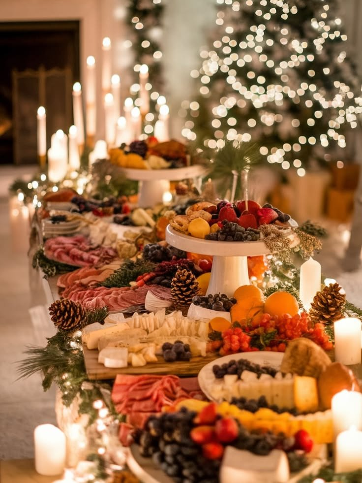
What Actually Makes a Good Christmas Appetizer
The strongest holiday spreads balance rich and light side by side. A baked cheese dish next to something fresh, shrimp, a vegetable platter, keeps the whole table from feeling heavy after the first hour.
A few seasonal colors or shapes, without going overboard, signal "Christmas" more effectively than an entirely red-and-green menu ever could.
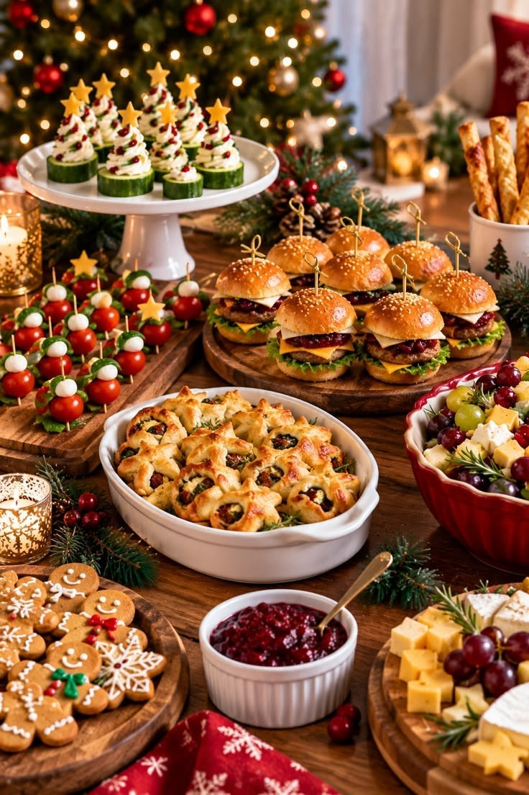
1. Christmas Tree Puff Pastry Bites
For a final idea where the presentation itself is the star, spread pesto, cheese, or another savory filling between layers of puff pastry, cut it into a tree shape, and twist the branches before baking.
Serve it with marinara, cheese dip, or whatever sauce you already love.
Guests can pull apart individual pieces while admiring the shape. Scatter a few pomegranate seeds on as ornaments and finish with a star-shaped cracker on top.
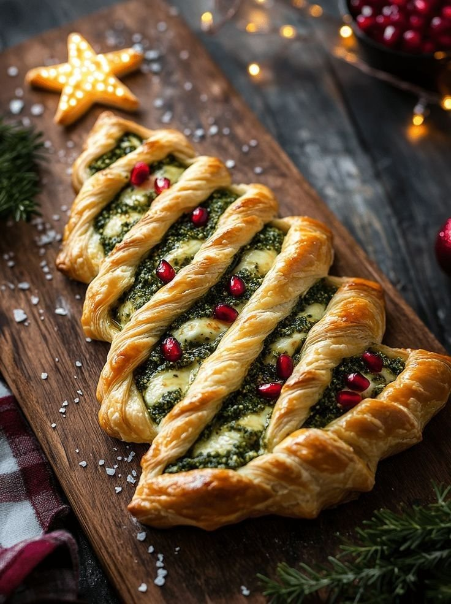
2. Mozzarella and Prosciutto Bites
Wrap small mozzarella balls in thin strips of prosciutto and secure each with a cocktail pick. It looks far more elaborate than it actually takes to make.
Basil leaves, cherry tomatoes, or roasted peppers add color. Arrange the bites in rows with a light balsamic drizzle to finish.
The same pairing scales up beautifully on a full board too, ribbons of prosciutto curled next to cubes of cheese, just in a bigger format.
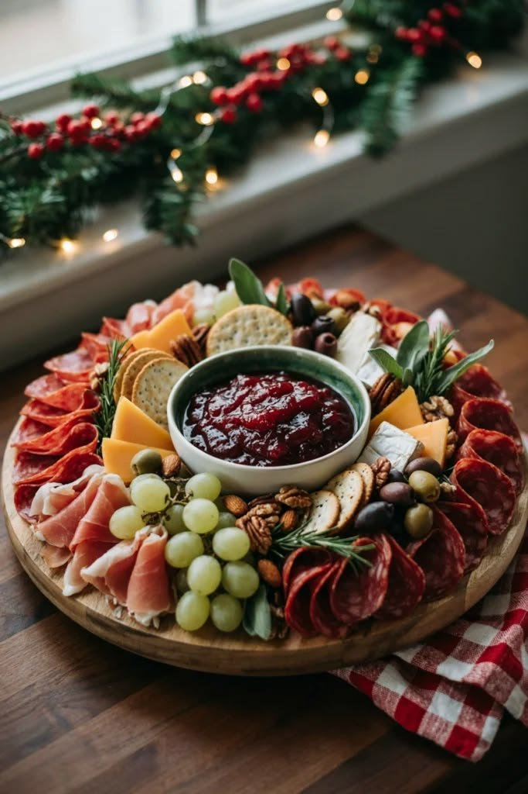
3. Sweet Potato Crostini
Roast thin sweet potato slices until tender, then top them with goat cheese, pecans, and a drizzle of honey for a crostini alternative with genuine seasonal color.
Toasted baguette works just as well instead of sweet potato, if you'd rather go traditional.
The warm orange color, creamy cheese, and toasted nuts feel naturally seasonal. A simple dollop of herbed cheese with a few flecks of rosemary keeps the whole thing easy to assemble.
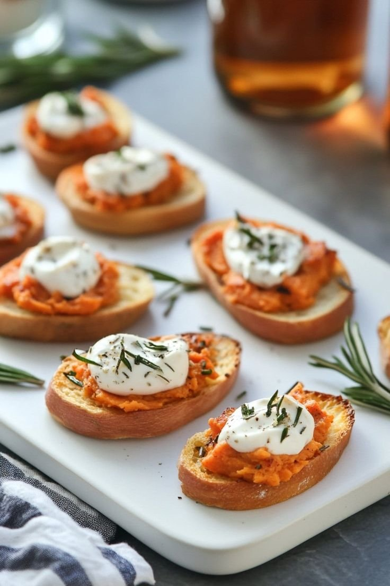
4. Mini Crab Cakes
Crab cakes instantly make an appetizer table feel a little more special.
Mix crab meat, breadcrumbs, herbs, seasonings, and a little mayonnaise, shape into small patties, and pan-fry or bake. Pair with lemon aioli or another creamy dipping sauce.
Keep the cakes small, and guests can enjoy one or two without filling up before dinner. A small bowl of herbed aioli on the side is really all the dipping sauce these need.
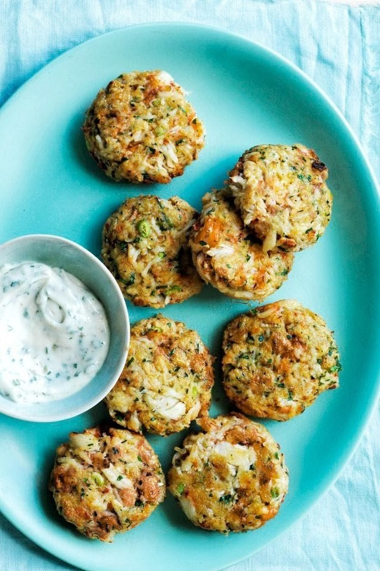
5. Holiday Hummus Platter
Hummus doesn't have to feel like an afterthought at a Christmas party.
Spread hummus onto a large platter, then build a festive arrangement around it with cucumber, cherry tomatoes, olives, carrots, peppers, pita triangles, and fresh herbs. You can even shape the vegetables into a tree or wreath.
Ring the hummus with cherry tomatoes, olives, cucumber, and feta, and a plain bowl turns into a wreath shape with basically zero extra effort.
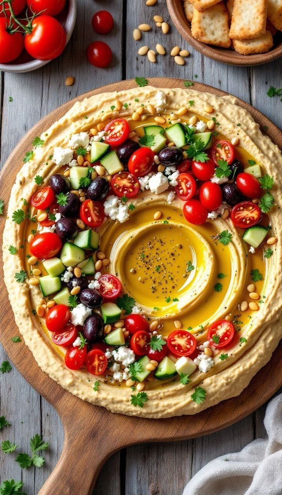
6. Brie and Apple Crostini
Place thin apple slices over toasted baguette with brie, bake briefly until the cheese softens, then finish with honey and chopped walnuts. Rich cheese against crisp fruit, basically every time.
A tart apple variety gives you the best contrast against the sweetness of the honey and the richness of the brie.
Pull a thin drizzle of honey straight off the dipper right over the warm brie and apple at the table. Small touch, worth doing.
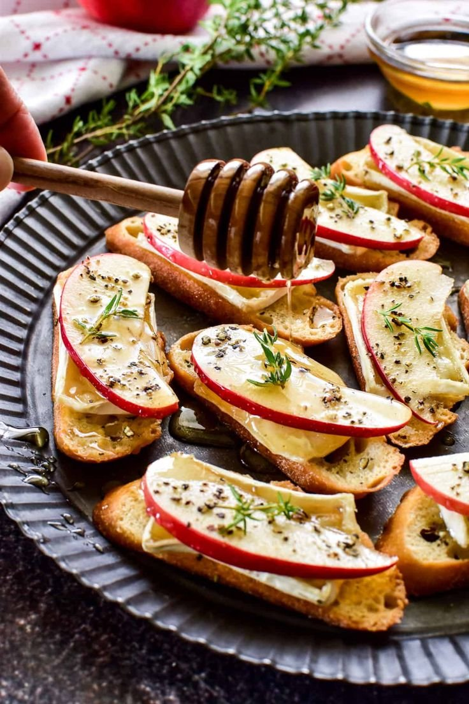
7. Deviled Eggs With Christmas Garnishes
Deviled eggs rarely need much convincing to work at a party, but a few small touches give them a holiday upgrade.
Pipe the classic creamy filling, egg yolks, mayonnaise, mustard, seasonings, into the whites, then garnish with paprika, chives, dill, or tiny pomegranate seeds. Familiar recipe, seasonal color.
A few flecks of diced red pepper and a small rosemary sprig tucked under each half reads as festive without any special equipment required.
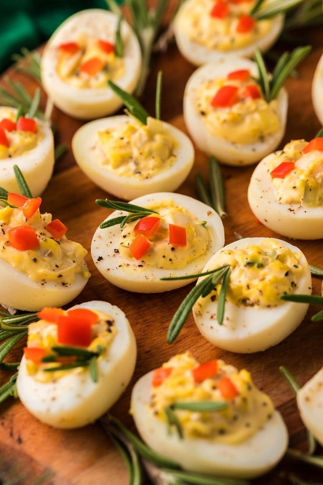
8. Cranberry Jalapeño Cream Cheese Dip
This one brings a bit of personality to an otherwise classic appetizer spread.
Spread softened cream cheese onto a serving dish, then top with cranberry sauce, chopped jalapeños, green onions, and fresh herbs for a real sweet-and-spicy contrast.
Spread it in one even layer, with the jalapeño slices visible on top, so guests can see exactly how much heat they're signing up for before diving in.
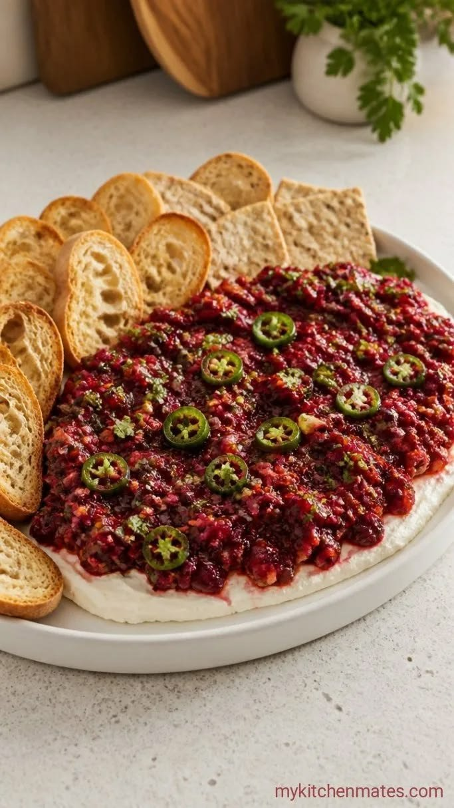
9. Parmesan Puff Pastry Twists
Roll puff pastry with Parmesan, black pepper, garlic powder, and herbs, then cut into strips and twist before baking for an easy pick-up appetizer.
Serve them upright in a glass or arranged in a basket. Guests can grab one without needing a plate or fork.
Laid flat on a board next to a wheel of herbed cheese and a bowl of cranberries, the twists double as their own dipper.
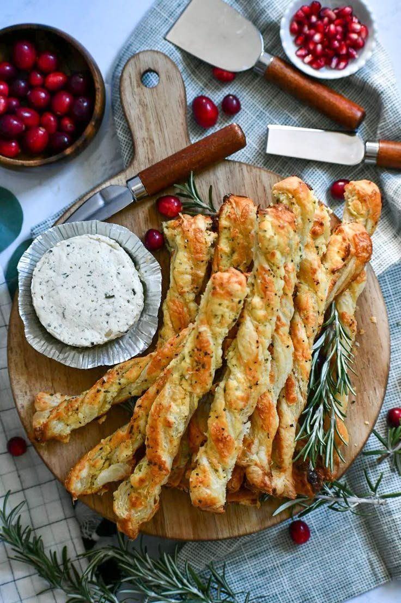
10. Smoked Salmon Cucumber Bites
Thick cucumber rounds topped with cream cheese, smoked salmon, dill, and lemon zest build a bite that feels elegant without becoming fussy.
Most of the components can be prepped well ahead of time, with the final bites assembled just before guests arrive.
A herbed cream cheese swirl, a ribbon of smoked salmon, and a small dill sprig on each round is the entire assembly, and it looks considerably more composed than the effort it actually took.
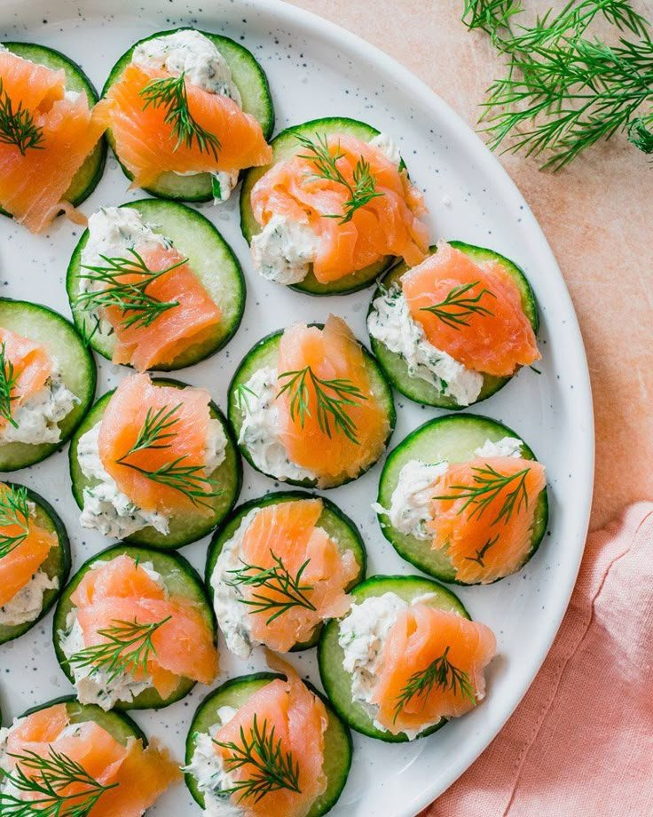
11. Mini Christmas Meatballs
Shape your favorite meatball mixture into small, bite-sized portions for easy party food.
Serve with toothpicks and a cranberry barbecue sauce for Christmas specifically, combining sweet, tart, and savory in one glaze. Keep them warm in a slow cooker so guests can grab one throughout the evening.
A sticky, sesame-flecked glaze finished with sesame seeds and fresh parsley works just as well if you'd rather skip the cranberry sauce for something more savory.
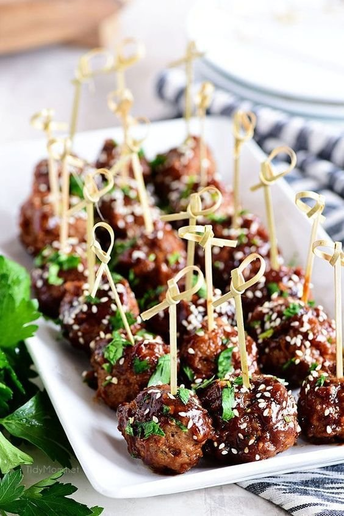
12. Pomegranate and Whipped Feta Crostini
Whip feta with cream cheese or Greek yogurt until smooth, then spread it over toasted baguette slices and top with pomegranate seeds for a genuinely striking bite.
The creamy white base against the jewel-toned red seeds creates a gorgeous presentation for very little actual effort. A bit of mint or parsley finishes it.
Scatter toasted walnuts underneath the pomegranate for the crunch that keeps every bite interesting.
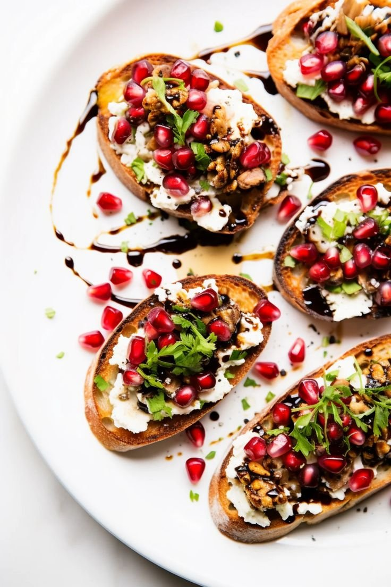
13. Christmas Charcuterie Board
A Christmas charcuterie board delivers maximum visual impact for relatively little actual cooking.
Arrange cured meats, cheeses, crackers, nuts, dried fruit, and fresh berries onto a large wooden board in small clusters, rather than spreading everything evenly. A little visual mess actually makes the board feel more abundant.
A Christmas-tree-shaped board does that clustering automatically, building cheese, salami, walnuts, and sugared cranberries up toward a star on top.
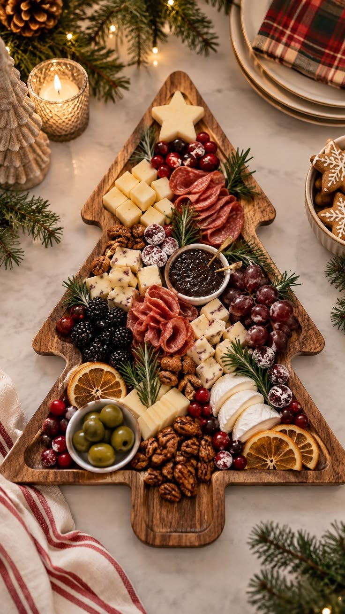
14. Baked Camembert With Cranberries
A wheel of Camembert in a small baking dish, topped with cranberries, rosemary, honey, and chopped nuts before baking, delivers real drama the moment it's cut open.
Serve it with toasted baguette slices so guests have something to actually scoop that warm, creamy center with.
People tend to gather around a baked cheese dish immediately. A rosemary sprig on top and a ring of olive-oil-brushed baguette around the dish, served beside a glass of red wine, completes the whole moment.
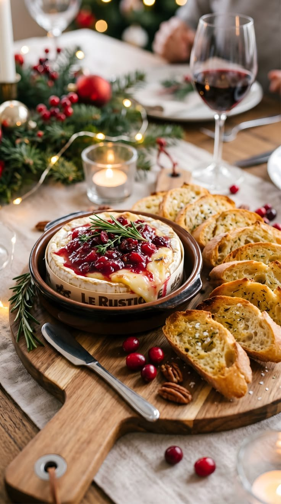
15. Prosciutto-Wrapped Melon
For something fresh among the richer dishes, sweet melon paired with salty prosciutto offers a genuine break.
Cut melon into small cubes or wedges, wrap each with prosciutto, and secure with a cocktail pick. A bit of basil or a light balsamic drizzle rounds it out.
Scatter chopped basil and a drizzle of glaze over the melon and prosciutto, and a simple two-ingredient bite turns into something that looks genuinely composed.
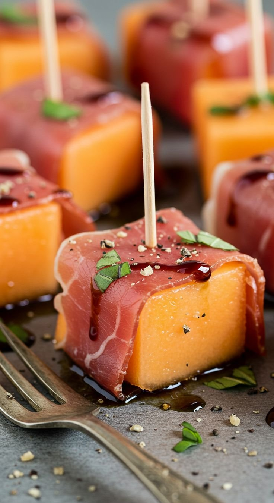
16. Shrimp Cocktail
Shrimp cocktail gives your Christmas appetizer table a lighter, seafood-forward option among the heavier dishes.
Chilled shrimp served with cocktail sauce and lemon wedges, arranged over crushed ice or on a chilled platter, covers the basics. Keeping cold foods at 40°F or colder is worth paying attention to when guests linger around the table for hours.
Arrange the shrimp in a ring around the sauce, with a few cranberries and sprigs of dill tucked in, and it reads as a wreath before anyone even registers it's dinner.
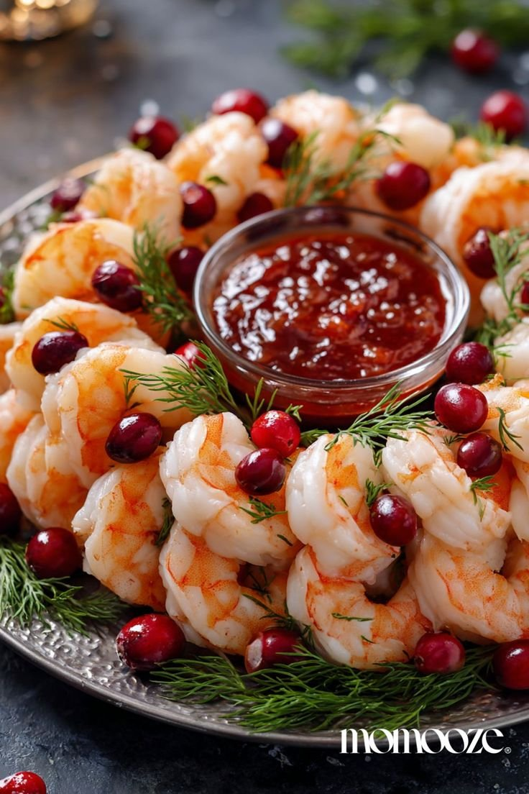
17. Mini Sausage Rolls
Mini sausage rolls work especially well for a casual Christmas gathering.
Wrap seasoned sausage meat in puff pastry, cut into bite-sized pieces, and bake until golden for a roll that pairs well with mustard, cranberry dipping sauce, or sweet chili sauce.
Keeping them small lets guests grab one without committing to a full pastry before dinner. A poppy-seed glaze and a small pot of cranberry sauce alongside is all the extra presentation they need.
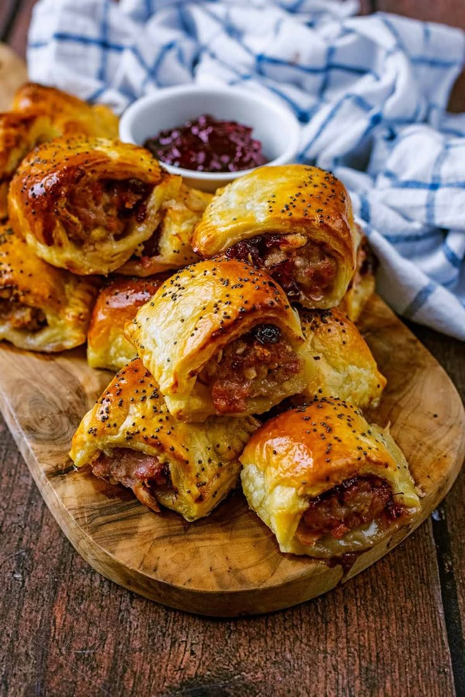
18. Cranberry Goat Cheese Bites
Spread goat cheese onto crackers or small toasted bread rounds, add cranberry sauce, and finish with chopped walnuts for a bite where tangy and sweet balance each other perfectly.
A few pomegranate seeds scattered around the platter push the presentation further for basically no extra effort.
A charcuterie-style cheese and fruit tree pulls from the exact same flavor palette, cubes of cheese, dried cranberries, and walnuts clustered together, just scaled up into a full board instead of an individual bite.
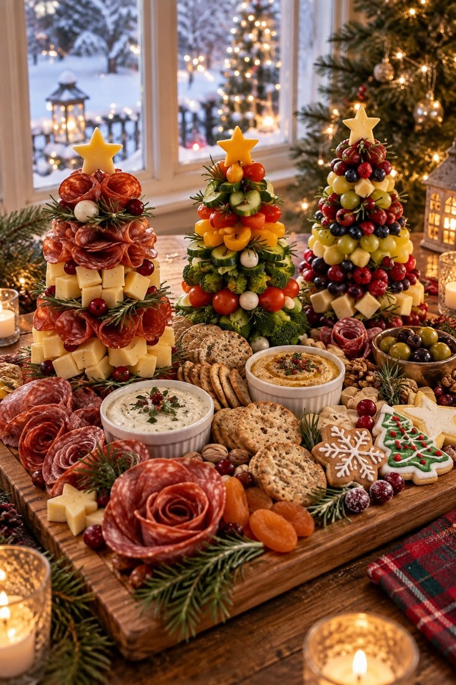
19. Baked Spinach Artichoke Dip
For a single dish that disappears quickly, spinach artichoke dip is hard to beat.
Combine spinach, artichokes, cream cheese, sour cream, Parmesan, mozzarella, and garlic, then bake until hot and bubbling for a dip that works with toasted bread, crackers, or vegetables.
Place it near the center of the table and guests will keep coming back for "just one more" scoop. Serve it straight from the skillet, ringed with colorful tortilla chips, and it becomes the table's centerpiece on its own.
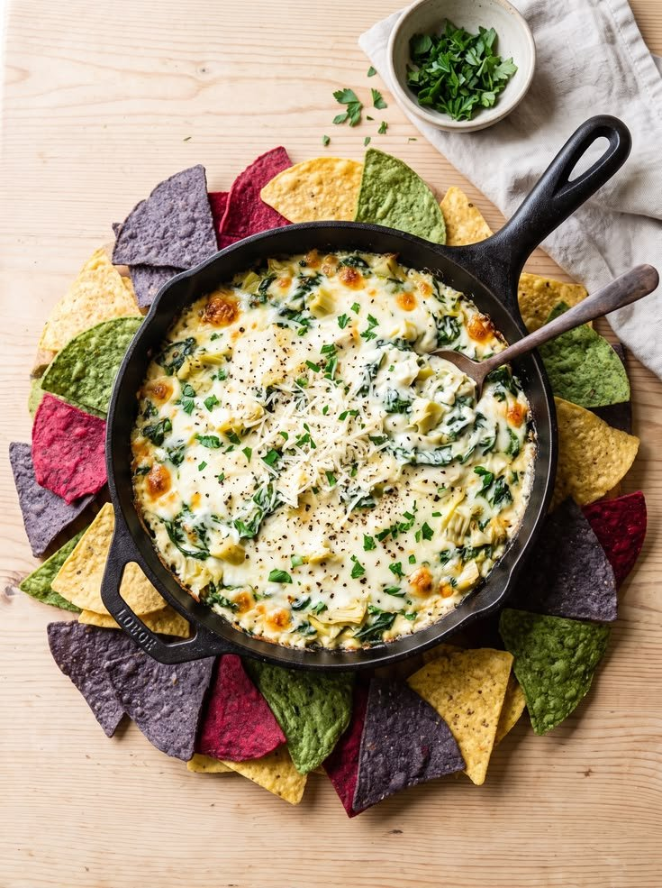
20. Caprese Christmas Skewers
Turning simple Caprese ingredients into finger food makes them considerably easier to serve at a party.
Thread cherry tomatoes, mozzarella balls, and fresh basil onto small skewers, then drizzle lightly with balsamic glaze. That's the entire recipe.
The red, white, and green color combination reads as Christmas instantly, without requiring any extra decoration. Sometimes the simplest presentation wins.
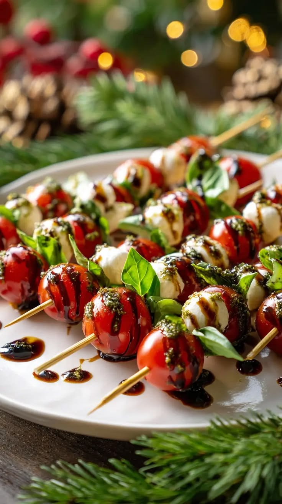
21. Bacon-Wrapped Dates
Sweet dates and salty bacon make an almost unfairly good pairing.
Stuff Medjool dates with goat cheese or cream cheese, wrap each in bacon, and bake until the bacon crisps up. A small almond tucked inside the date before wrapping adds a noticeable bit of crunch.
Secure each one with a toothpick and a small rosemary sprig, and they look like they came from a caterer rather than a home oven.
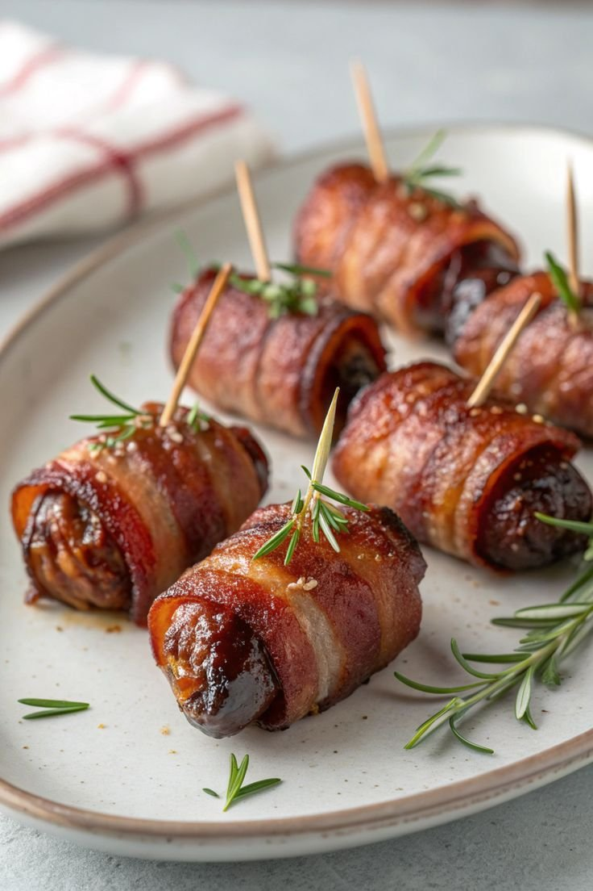
22. Garlic Parmesan Stuffed Mushrooms
Stuffed mushrooms make an excellent Christmas appetizer, since they read as elegant while using genuinely inexpensive ingredients.
Fill mushroom caps with breadcrumbs, Parmesan, garlic, parsley, and a little olive oil, then bake until the tops turn golden. That's the entire process.
They're especially useful for a dinner party, since the filling can be prepared well ahead of time, with the mushrooms assembled and baked just before guests arrive.
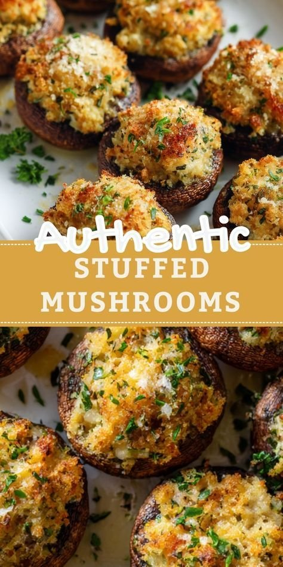
23. Christmas Tree Cheese Ball
Shaping a classic cheese ball into a Christmas tree turns a familiar party staple into a genuine centerpiece.
Mix cream cheese with shredded cheddar, herbs, garlic, and seasonings, then cover the shaped mixture with chopped parsley, pistachios, cranberries, or pomegranate seeds. Crackers arranged around the base finish the display.
For a version without any shaping required, the same cream cheese and cranberry filling baked into individual puff pastry cups delivers identical flavor with none of the molding.
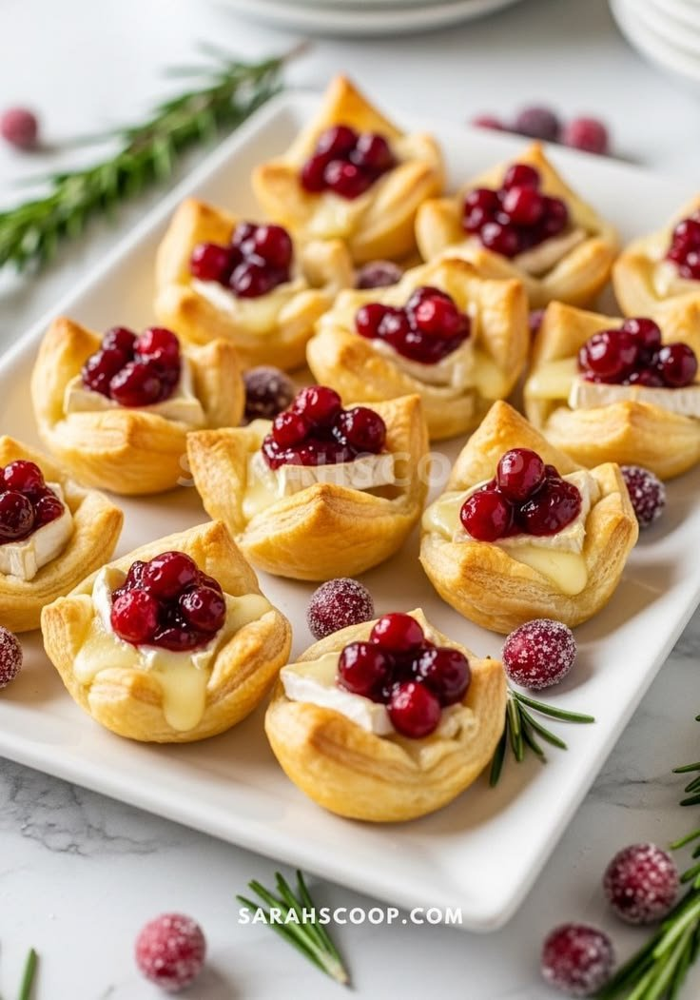
24. Cranberry Brie Crostini
Cranberry and brie practically announce Christmas on their own.
Toast thin baguette slices, add a small piece of creamy brie, then spoon cranberry sauce over the top. The whole bite builds in three steps.
A scatter of chopped pecans and a tiny rosemary sprig finishes it off. Creamy cheese, tart cranberry, crunchy nuts, crisp bread, a genuinely good texture combination.
Serve these slightly warm and let the brie soften beautifully. Swapping the pecans for walnuts and tucking in a thin pear slice is an easy variation worth trying.
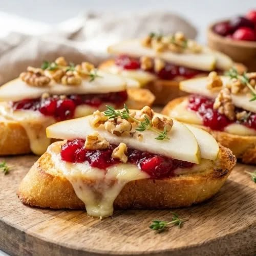
None of This Needs a Catering Budget
None of these twenty-four ideas require a catering budget or a full day spent in the kitchen.
A few well-chosen dishes, balanced between rich and light, will carry a holiday table further than a dozen complicated ones ever could.
The appetizers people remember are rarely the most elaborate ones. They're the ones that actually got eaten, refilled, and talked about while everyone waited for dinner.
Pick four or five from this list that actually sound good to you, not the ones that photograph best, and let the rest of the menu follow from there.